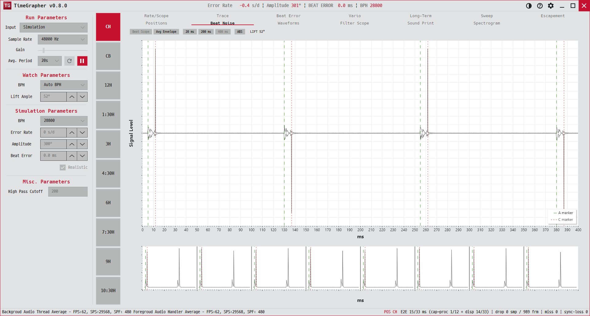

11. Beat Noise
한 비트의 충격 엔벨로프를 자세히 보고, 최근 비트들을 나란히 비교하며, 여러 비트를 평균 내어 반복성을 봅니다.
Inspects one beat's impulse envelope in detail, compares recent beats side by side, and averages many beats to judge repeatability.

용도 · Purpose
탈진기 충격(A·C)의 모양과 위치가 일정한지, 매 비트가 같은 프로파일을 그리는지 확인합니다.
Checks whether the escapement impulses (A/C) have a consistent shape/position and whether each beat draws the same profile.
무엇이 보이나 · What's shown
- Scope 1 (메인, 좌상) — X = ms(범위 20·200·400 중 선택), Y = 엔벨로프(기본) 또는 RAW 양극 파형. 세로 마커: A 온셋(초록 점선), C 피크(빨강 점선), C 온셋(빨강 점). 라벨 예:
A 0.0 ms,C peak X.X ms. 위에LIFT X.X°.Scope 1 (main, top-left) — X = ms (range 20/200/400), Y = envelope (default) or RAW bipolar. Vertical markers: A onset (green dashed), C peak (red dashed), C onset (red dotted). Labels e.g.A 0.0 ms,C peak X.X ms;LIFT X.X°above. - 스트립 (좌하) — 최근 8비트를 옆으로 나열. 클릭하면 그 비트가 메인에 확대됩니다.Strip (bottom-left) — the last 8 beats side by side; click one to enlarge it in the main plot.
- Scope 2 (평균, 우) — 위상 교대 두 평균 트레이스(trace 1·trace 2). 아래 읽기:
TRACE 1 Signal Level … · TRACE 2 Signal Level … | Σ 진행(예:Σ 23/50 · 22/50,Σ complete,Σ off).Scope 2 (average, right) — two phase-alternated average traces (trace 1/2). Readout:TRACE 1 Signal Level … · TRACE 2 Signal Level … | Σ progress(e.g.Σ 23/50 · 22/50,Σ complete,Σ off).
읽는 법 · How to read
- 메인 플롯에서 A·C 마커 간 간격이 매 비트 일정하면 좋습니다.Consistent A↔C marker spacing across beats is good.
- 스트립의 8비트가 서로 비슷한 모양이면 반복성이 높습니다(좁고 또렷한 프로파일).If the 8 beats in the strip look alike, repeatability is high (narrow, crisp profile).
- Scope 2의 두 평균이 수렴(Σ 진행이 채워짐)하면 안정적인 평균 프로파일을 얻은 것입니다.As the two averages converge (Σ progress fills), you have a stable averaged profile.
옵션 · Options
- 범위(ms) — 20 / 200 / 400 중 선택해 메인 가로 범위를 바꿉니다.Range (ms) — choose 20 / 200 / 400 for the main horizontal span.
- RAW — 정류 엔벨로프 대신 실제 양극 파형을 봅니다(가능할 때).RAW — show the real bipolar waveform instead of the rectified envelope (when available).
- 스트립 선택 — 비트를 클릭해 메인에서 자세히 봅니다.Strip select — click a beat to enlarge it in the main plot.